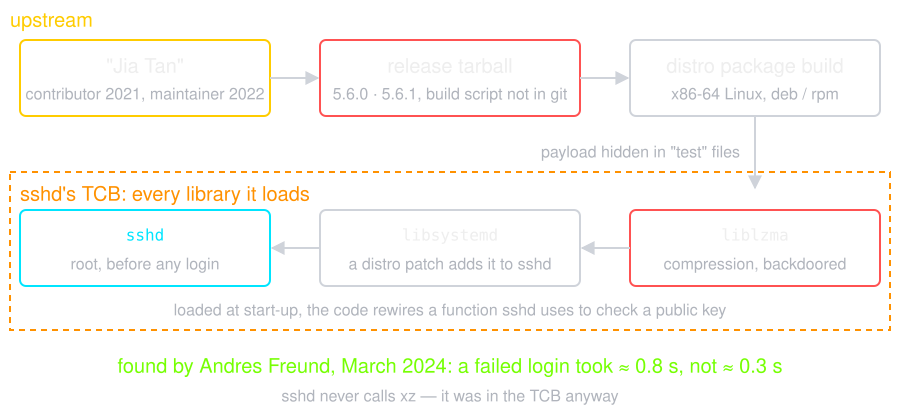
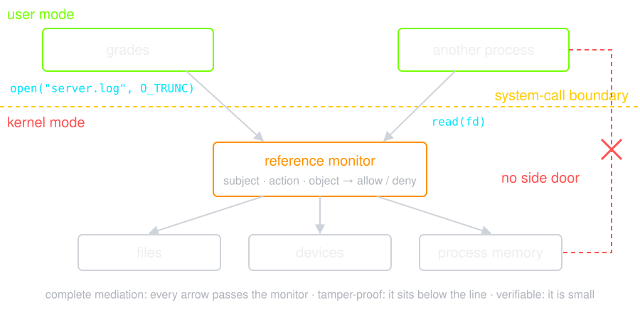
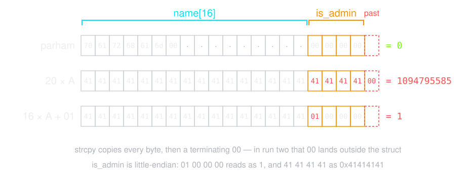
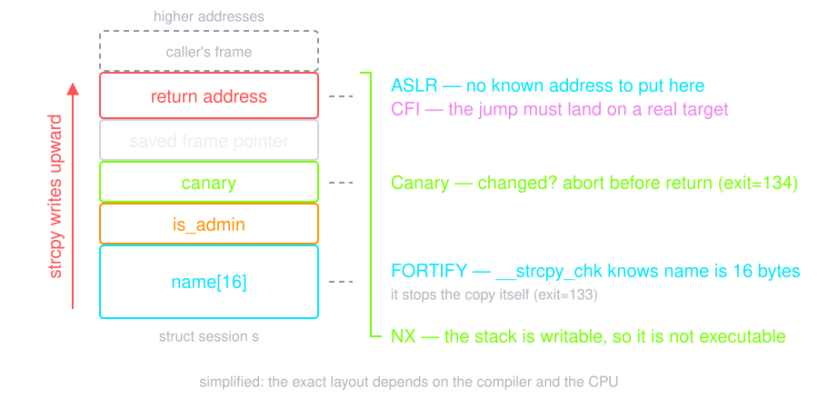
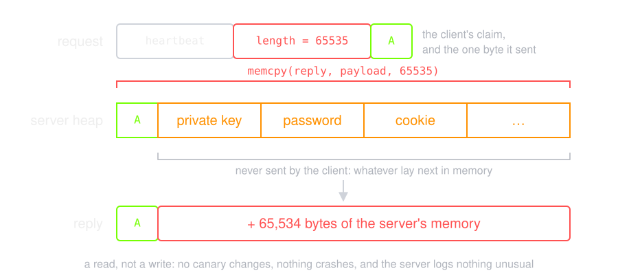
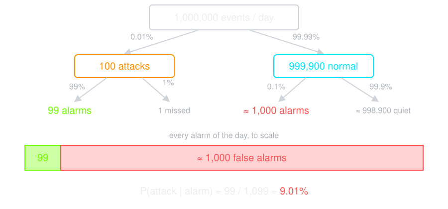
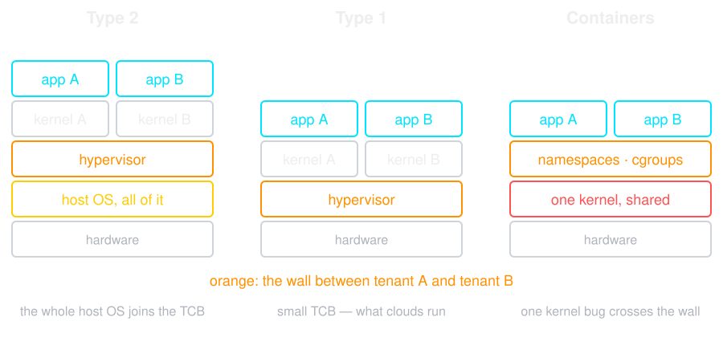

Lecture 4 asked allow(s, a, o) about a person. Here the
subject is a process, the object is a file, a device or memory —
and the kernel answers.
s bit)
Lecture 2 called this "trusted functionality" and told you to keep it small. This is what it looks like in practice.
A security tool is in the TCB too — and so is its bug.
Source: CrowdStrike, Channel File 291 Root Cause Analysis; Microsoft, Helping our customers through the CrowdStrike outage
xz, a compression library, then shipped a backdoor in
releases 5.6.0 and 5.6.1 (CVE-2024-3094)
sshd never uses compression — but on several distributions
it loads libsystemd, which loads liblzma
Source: Andres Freund, backdoor in upstream xz/liblzma (oss-security); Russ Cox, Timeline of the xz open source attack


When the grade service opens its log, the decision is made here — not in a line of Go.
Ask it of the grade service: which account runs ./grades,
and what else can that account touch? Mostly, the answer is files.
0600, owned by the service
account
x to traverse — a permissive parent
undoes a strict child
umask, a config committed to git
Lecture 1's grade service, first version, running as
./grades 2>> server.log:
$ curl -s -H 'X-User: 4001' -d 'id=4001&grade=20' localhost:8080/grade
4001 is now 20
$ cat server.log
2026/10/14 09:50:41 grade 4001=20 by 4001
$ sed -i '' '/by 4001/d' server.log
$ wc -l < server.log
0
sed, there is nothing to read
$ chflags uappnd server.log
$ curl -s -H 'X-User: 4001' -d 'id=4001&grade=20' localhost:8080/grade
4001 is now 20
$ sed -i '' '/by 4001/d' server.log
sed: rename(): Operation not permitted
$ cat server.log
2026/10/14 09:50:50 grade 4001=20 by 4001
$ chflags nouappnd server.log
uappnd is the owner's flag — the last line removes it,
with no error
sappnd (chattr +a on Linux), or the
log leaves for another host as it is written
The process that writes the record must not own it.
Every check here trusts the program that runs as you. Next: the program that does not deserve it.
Sort by how it spreads, not by what it does:
| Virus | Attaches to a host file. Needs a user to run it |
| Worm | Self-propagating over the network. Needs nobody |
| Trojan | Useful-looking, and the user installs it deliberately |
| Rootkit | Hides the others, usually by lying to the kernel |
| Bot | Waits for orders from a command-and-control server |
Then, separately, the payload: ransomware, spyware, a miner, a wiper, a keylogger. Any spreader can carry any payload.
Source: Falliere, O Murchu & Chien, W32.Stuxnet Dossier v1.4 (Symantec, 2011)
A replica is not a backup. The offline copy has to be design, not luck.
Source: Andy Greenberg, The Untold Story of NotPetya (WIRED, 2018)
Detection waits for the malware to arrive. How does it arrive? Mostly through a bug in a program you trusted.
struct session {
char name[16];
int is_admin; /* the next field in memory */
};
struct session s;
s.is_admin = 0;
strcpy(s.name, argv[1]); /* no bound check */
printf("name=%-24s is_admin=%d\n", s.name, s.is_admin);
$ ./login parham
name=parham is_admin=0
$ ./login AAAAAAAAAAAAAAAAAAAA
name=AAAAAAAAAAAAAAAAAAAA is_admin=1094795585
1094795585 is 0x41414141 — four of the
letter A. The name overflowed straight into the flag.
$ ./login "AAAAAAAAAAAAAAAA$(printf '\x01')"
name=AAAAAAAAAAAAAAAA is_admin=1
strcpy did exactly what it is
documented to do

The dots are bytes nobody set. strcpy never asks where
name ends.
Two checks the compiler adds: FORTIFY gives
strcpy the buffer size; a canary is a random value
beside the return address, checked before the function returns.
$ cc -O0 -o login-hardened login.c # the defaults
$ ./login-hardened AAAAAAAAAAAAAAAAAAAA
exit=133 # SIGTRAP — __strcpy_chk knew the buffer was 16 bytes
$ cc -O0 -fstack-protector-all -o login-canary login.c
$ ./login-canary AAAA…40 bytes
exit=134 # SIGABRT — the canary was overwritten

Source: OpenSSL Security Advisory, 7 April 2014; Codenomicon, The Heartbleed Bug

The length came with the data. Lecture 6 meets the same trust, one layer up.
-fsanitize=address,undefined), fuzzing, and review of
every allocation
Bugs will still ship. So the host must notice when one is used — and stop what it does next.
pf, nftables, Windows Defender Firewall — the
rules differ, the discipline does not
events/day 1,000,000
of them, attacks 100
detection rate 99.0%
false-alarm rate 0.1%
true alarms/day 99
false alarms/day 1,000
total alarms/day 1,099
P(attack | alarm) 9.01%
A detector that misses almost nothing, and nine out of ten alarms are wrong.

malware.binary
Detection will miss. So limit the damage: when this host falls, what else falls with it?
Source: US Senate Commerce Committee, A "Kill Chain" Analysis of the 2013 Target Data Breach (2014)
--privileged
runc starts the containers under Docker, containerd, CRI-O
and Kubernetes.
CVE-2019-5736 let a container
overwrite the host's runc binary
Source: Aleksa Sarai, CVE-2019-5736: runc container breakout (oss-security); Kubernetes, Runc and CVE-2019-5736

Ask of each one: what stands between tenant A and tenant B?
$ uname -sr
Darwin 27.0.0
$ docker run --rm debian:bookworm uname -sr
Linux 7.0.14-linuxkit
$ docker run --rm quay.io/centos/centos:stream9 uname -sr
Linux 7.0.14-linuxkit
$ docker run --rm debian:bookworm sh -c 'ls /dev | wc -l'
15
$ docker run --rm --privileged debian:bookworm sh -c 'ls /dev | wc -l'
169
--privileged takes the container from 15 devices to 169:
the VM's hardware, handed over in one flag
server.log. Why does
uappnd not protect it, and what does?
As make is_admin 1094795585,
and why is the canary's crash an improvement?
Next: the same failure, on the most exposed application anyone runs — the one that takes input from every stranger on the internet.